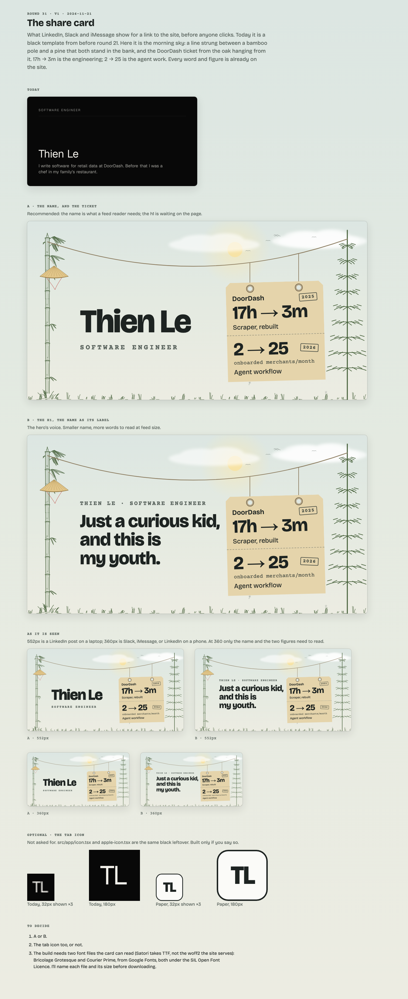

The front door
What people meet before the page: the card a link shows, and GitHub. Why, and what was left alone: audit.md. Audience (Thien): software engineering and AI agent work.
- Board: boards/share-card.html (today's card, A, B, both at 552 and 360, and the optional tab icon).
- To decide: A or B; the tab icon or not; the two font downloads.

- Sheet: github.md, with every text that would go public: the repo's website, description and topics; the README's opening; the profile README; the profile's bio, website, company and location.
- Yours in the GitHub UI: the pins (the portfolio first) and, if you want, the starter forks.
- To decide: the texts as written or changed, and whether I set the profile fields with
ghor you do.